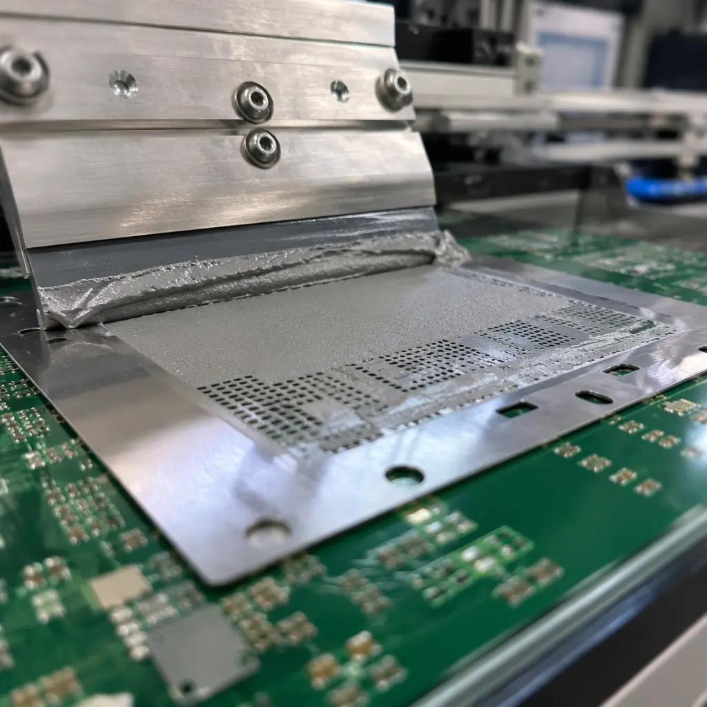
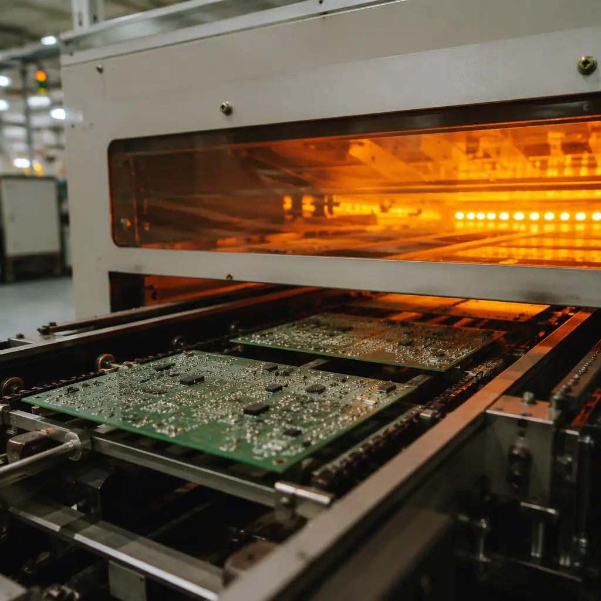
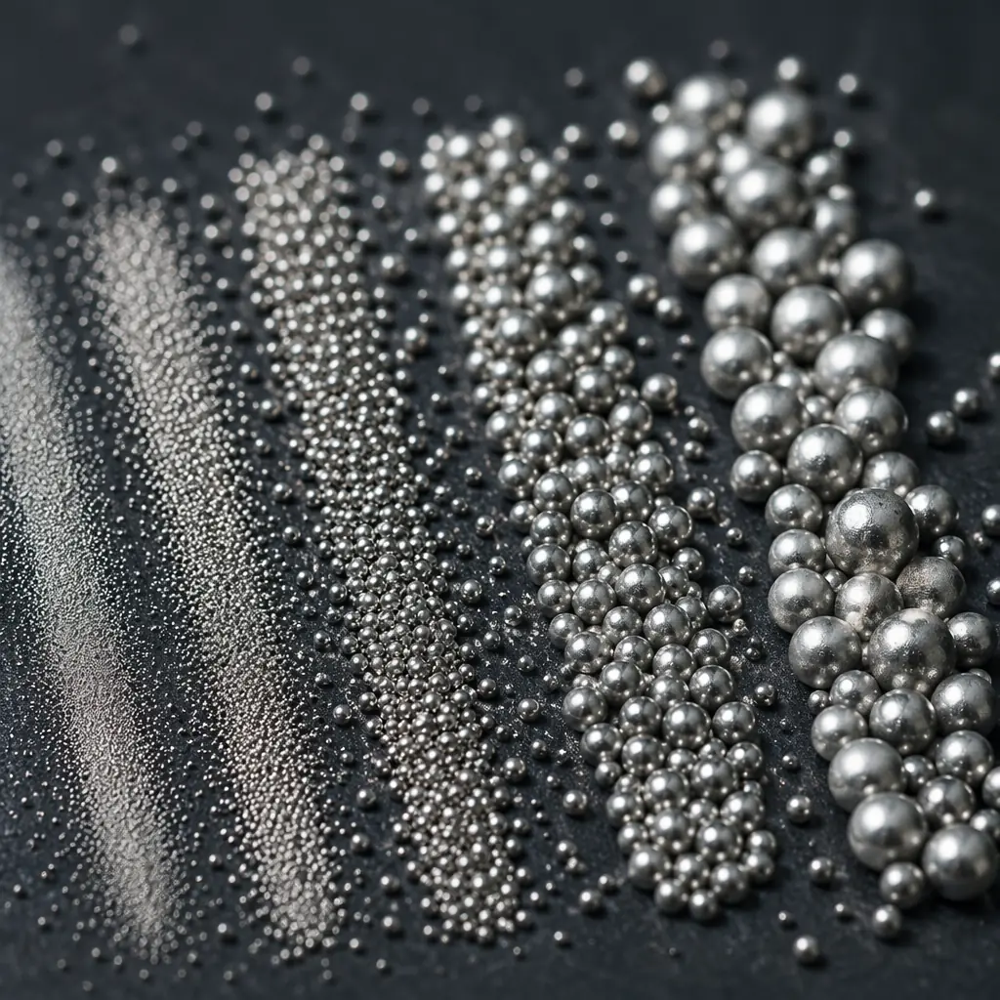

Solder paste is one of the most under-specified materials in a PCB assembly BOM. Buyers spend weeks negotiating laminate grades and surface finishes, then default to "lead-free solder paste" without specifying alloy composition, flux type, or powder particle size. Yet solder paste directly controls three things that determine whether your boards work: joint mechanical strength, electrical conductivity after thermal cycling, and voiding rates under BGAs and QFNs.
Our Shenzhen facility runs 8 SMT lines processing over 2 million solder joints per day across automotive, medical, industrial, and consumer assemblies. Here is the framework our process engineers use to match solder paste to application requirements — and the mistakes we see procurement teams make when they leave this decision to default settings.
Bottom line up front: SAC305 (Sn96.5/Ag3.0/Cu0.5) is the correct default for 80% of lead-free assemblies. The other 20% — high-reliability automotive, low-temperature substrates, step-soldering processes, and ultra-fine-pitch — need deliberate deviation from that default. This guide tells you when and why.

SAC305 (SnAgCu): The Industry Default — and Its Limits
SAC305 — 96.5% tin, 3.0% silver, 0.5% copper — emerged as the lead-free industry standard after RoHS eliminated SnPb in 2006. It melts at 217–220°C with a peak reflow temperature of 240–250°C, provides good wetting on OSP, ENIG, and immersion silver finishes, and offers acceptable thermal fatigue resistance for most commercial and industrial applications.
Its dominance is not because it is the best alloy for every situation. It is the best compromise: good enough for most, widely available, and compatible with standard reflow profiles. SAC305 works reliably when three conditions are met: the PCB laminate can withstand 250°C peak reflow without delamination, your components are rated for 260°C peak body temperature, and your board thickness and copper distribution allow uniform heating without warpage.
The limitations emerge when you push beyond these conditions. SAC305 forms brittle intermetallic compounds (Cu6Sn5 and Ag3Sn) at the solder-pad interface that grow thicker over time and thermal cycles. In automotive under-hood applications cycling from -40°C to +150°C, these IMC layers can exceed 5μm within 1,000 cycles — the point where joint strength drops measurably. For these applications, doped SAC alloys with nickel, bismuth, or antimony additions outperform standard SAC305.
Procurement rule: If your assembly will experience more than 1,000 thermal cycles with a ΔT above 100°C, specify SAC305 + dopant (e.g., SAC305+Ni or Innolot) rather than standard SAC305. The per-syringe cost difference is approximately $0.50 — and the field reliability difference is measured in years of service life.
SnPb (Tin-Lead): Still Relevant for Specific Applications
Sn63/Pb37 (63% tin, 37% lead) and Sn62/Pb36/Ag2 (with 2% silver to reduce silver leaching from component terminations) remain in active use despite two decades of RoHS restrictions. The exemptions are specific: military and aerospace (where tin whisker risk is unacceptable), medical devices with long qualification cycles that cannot change materials without re-certification, and high-reliability industrial equipment operating in environments where lead-free joint reliability data is insufficient.
SnPb melts at 183°C — 35°C lower than SAC305. That lower processing temperature matters for three reasons: it reduces thermal stress on temperature-sensitive components and substrates, it allows wider process windows on boards with large thermal mass variations, and it produces joints with a characteristic dull-grain appearance that trained inspectors can evaluate visually for process consistency. The lower surface tension of molten SnPb also produces better wetting on difficult finishes like OSP that has aged beyond its shelf life.
Compliance note: RoHS exemption 7(a) — lead in high-melting-temperature solders — and exemption 15 — lead in solders for specific applications — are under periodic review. If your product life cycle extends beyond 2028, plan a SAC305 transition even if you currently operate under an exemption. We have helped automotive tier-1 suppliers manage this transition; see our RoHS compliance guide for the full regulatory timeline.

Low-Temperature Solder Pastes: When 260°C Is Too Hot
Low-temperature solder (LTS) pastes — primarily SnBi (tin-bismuth) and SnBiAg alloys — melt at 138–180°C with peak reflow at 170–200°C. This 60–80°C reduction in processing temperature solves three problems simultaneously: it eliminates warpage on thin, high-layer-count boards where CTE mismatch causes PCB deformation at SAC305 temperatures, it protects heat-sensitive components like MEMS sensors optical modules and polymer capacitors, and it cuts reflow energy consumption by approximately 30% — a meaningful cost saving at production scale.
The trade-off is joint brittleness. Bismuth-tin intermetallics are inherently less ductile than tin-silver-copper compounds. Drop-test performance of SnBi joints is approximately 40–60% lower than SAC305. For handheld consumer devices that will be dropped repeatedly, SnBi is the wrong choice. For a server motherboard that sits in a rack its entire service life, SnBi can be perfectly adequate — and the reduced warpage may actually improve overall reliability by preventing BGA corner-joint opens that warp-induced stress would cause.
A newer class of low-temperature alloys — SnBiAg with 1–2% silver, or SnInAg (tin-indium-silver) — bridges the gap. These alloys melt at 165–190°C but achieve drop-test performance within 15% of SAC305. The cost premium is significant (SnInAg can be 3–5× SAC305 per gram), but for applications where both low processing temperature and high mechanical reliability are non-negotiable, they are the correct specification.
Flux Chemistry: No-Clean vs Water-Soluble vs RMA
The flux inside the solder paste is as important as the metal alloy. Flux removes oxides from the pad and component termination surfaces, enables wetting, and then either volatilizes or remains as a residue. Three families dominate production:
| Flux Type | Activity Level | Post-Process Cleaning | Best For |
|---|---|---|---|
| No-Clean (ROL0/ROL1) | Low–Medium | Not required for most applications | Consumer electronics, general industrial, 80% of assemblies |
| Water-Soluble (ORH1) | High | Mandatory — DI water wash within 24h | High-reliability: automotive ECU, medical implant, aerospace |
| RMA (RO Moderately Activated) | Medium | Optional but recommended for Class 3 | Mixed-technology boards, legacy designs, hand soldering touch-up |
No-clean flux dominates production volume — probably 85% or more of all PCB assemblies worldwide. But its name is misleading: no-clean flux leaves residue. The difference is that the residue is designed to be non-conductive and non-corrosive at operating conditions below 85°C and 85% RH. Above those thresholds, no-clean residues can absorb moisture, become slightly conductive, and cause leakage currents that degrade analog circuit performance over time.
For any assembly that will operate in condensing humidity, experience board temperatures above 85°C in service, or carry microampere-level signals where nanoamp leakage matters — specify water-soluble flux and a verified DI water wash process. The cleaning step adds approximately $0.15–0.30 per board at production volume. The alternative is field failures that cost orders of magnitude more.

Powder Size: Type 3, 4, 5, and When It Matters
Solder paste powder is classified by particle size distribution per IPC J-STD-005. The "Type" number tells you the mesh size the powder passes through:
Type 3 (25–45μm): General-Purpose Workhorse
Suitable for component pitches down to 0.5mm (20 mil). Handles 0402 passives, SOICs, QFPs with 0.5mm lead spacing. Lower cost, longer stencil life, less susceptible to humidity-induced slump. If your board's finest-pitch component is 0.5mm QFP or 0.8mm BGA, Type 3 is the right call. Specifying Type 4 where Type 3 would work costs 20–30% more per syringe with no process benefit.
Type 4 (20–38μm): Fine-Pitch Standard
Required for 0.4mm pitch QFP, 0.5mm pitch BGA, 0201 passives, and any stencil aperture below 0.25mm width. Type 4 is now the most commonly specified paste for new designs because component miniaturization has pushed most boards into this requirement zone. Our facility defaults to Type 4 for all designs unless the BOM specifies otherwise — it costs marginally more but eliminates aperture clogging as a defect source.
Type 5 (15–25μm): Ultra-Fine-Pitch and Micro-BGA
Required for 0.3–0.4mm pitch BGA, 01005 passives, and flip-chip applications with bump pitch below 150μm. Type 5 powder oxidizes faster than Type 3 or 4 — shelf life is shorter (typically 4–6 months refrigerated vs 6–12 for Type 3), and it is more sensitive to humidity exposure during printing. Cost is approximately 2× Type 4. Do not over-specify — Type 5 on a board with 0.5mm pitch components wastes money and introduces process sensitivity you do not need.
Type 6 (5–15μm): Advanced Packaging Only
For wafer-level packaging, system-in-package (SiP), and advanced flip-chip with bump pitch below 100μm. Type 6 paste is a specialty material with limited suppliers, 2–3 month typical shelf life, and strict cold-chain logistics requirements. If you need Type 6, you already know — and you are working with an assembly partner that has dedicated Type 6 process qualification.
Application-Specific Recommendations
The correct solder paste specification varies by end-use environment. Here are the starting-point recommendations our process engineers use, subject to adjustment based on your specific board design:
| Application | Alloy | Flux | Powder | Key Concern |
|---|---|---|---|---|
| Consumer Electronics | SAC305 | No-Clean | Type 4 | Cost, drop-test reliability |
| Automotive (Cabin) | SAC305 | No-Clean | Type 4 | Thermal cycling -40/+85°C |
| Automotive (Under-Hood) | SAC305+Ni / Innolot | Water-Soluble | Type 4 | IMC growth, 150°C soak |
| Medical (Class III Implant) | SAC305 | Water-Soluble | Type 4 | Residue-free, ionic contamination |
| Military / Aerospace | Sn63/Pb37 (exemption) | Water-Soluble or RMA | Type 3/4 | Tin whisker prevention |
| LED Lighting | SAC305 or SnBiAg | No-Clean | Type 4 | Low temp if MCPCB, thermal fatigue |
| Server / Data Center | SAC305 or SnBi (LTS) | No-Clean | Type 4 | Warpage on large BGAs |
| Telecom / 5G Base Station | SAC305 | No-Clean or Water-Soluble | Type 4/5 | High-layer-count CTE mismatch |
Process engineering note: The alloy-flux-powder combination is a system — changing one variable affects the others. Type 5 powder with a high-activity water-soluble flux may slump during preheat because the flux activates before the solvents evaporate from the higher surface-area particles. Always run a DOE on new paste-process combinations before production release. Our standard qualification run is 50 boards with X-ray voiding analysis, cross-section on 10 BGAs, and ionic contamination testing per IPC-TM-650 2.3.25.
What to Put on Your BOM
Most PCB assembly BOMs do not specify solder paste at all — they leave it to the assembly house default. That is fine for consumer prototypes. For production volumes above 500 units, or any regulated-industry assembly, the BOM line for solder paste should specify at minimum:
Alloy composition
Example: "SAC305 per IPC J-STD-006" or "Innolot (Sn/Ag3.8/Cu0.7/Bi3.0/Sb1.4/Ni0.15)"
Flux type and classification
Example: "ROL0 per IPC J-STD-004C" or "ORH1 — DI water wash required within 24 hours of reflow"
Powder size
Example: "Type 4 per IPC J-STD-005" — include the standard reference so there is no ambiguity between supplier grading systems
Metal content by weight
Typically 88.5% for Type 3/4 stencil printing, 89.5% for Type 5. This number affects deposit volume — a change from 88.5% to 89.5% is a 1.1% increase in post-reflow solder volume that can push BGA standoff heights out of specification
For high-reliability programs, go one step further: name the specific solder paste product. "Indium 8.9HF SAC305 Type 4" or "Alpha OM-340 SAC305 Type 4" tells your assembly house exactly what to use and eliminates the risk of substitution with an equivalent that is not actually equivalent. If your end customer or regulatory body audits your supply chain, having the paste named on the BOM is a mark of manufacturing maturity that auditors look for. See our certifications compliance guide for documentation requirements by industry sector.
Storage, Handling, and Shelf Life
Solder paste is a perishable material. Unopened syringes and cartridges stored at 0–10°C have a typical shelf life of 6 months from the date of manufacture for Type 3 and 4 powders, and 3–4 months for Type 5. Once opened, the clock accelerates — moisture absorption, flux solvent evaporation, and powder oxidation all begin immediately. A syringe left at 25°C and 60% RH for 48 hours can degrade to the point where print definition drops measurably.
Three handling rules that prevent most solder-paste-related defects:
Refrigerated storage at 0–10°C
Do not freeze (below 0°C). Freezing separates flux from alloy powder through differential contraction. Thawed paste will never re-homogenize — its print rheology is permanently altered.
4-hour warm-up before opening
Remove from refrigeration and let the sealed container reach room temperature naturally. Opening cold paste causes moisture condensation on the cold metal powder — the added water becomes steam in reflow, creating solder balls and voiding. This is the most common process defect we see in factory audits of new assembly partners.
First-in-first-out (FIFO) inventory rotation
Use the oldest paste first. Mark each cartridge with the date it was removed from refrigeration and the number of hours it has been on the printer. Paste that has been at room temperature for more than 24 cumulative hours should be evaluated with a solder paste inspection (SPI) print test before use on production boards.
At our facility, we track every solder paste cartridge through a barcode system that logs refrigeration entry/exit time, cumulative room-temperature exposure, and the production lot it was used for. For regulated-industry customers, this data is included in the lot traceability report — satisfying ISO 13485 and IATF 16949 traceability requirements without additional documentation burden. For more on quality documentation, see our guide on incoming quality inspection procedures.
Making the Decision
Solder paste selection reduces to three questions, answered in order:
First, what temperature can your board and components survive? If your laminate is FR-4 with Tg 130°C and your components are rated for 260°C peak, SAC305 at 240–250°C reflow is straightforward. If your board is a 20-layer controlled-impedance design that warps above 220°C, or your components include MEMS microphones rated for 250°C peak, you need a low-temperature alloy — SnBiAg or SnInAg.
Second, what environment will the finished assembly operate in? Condensing humidity, salt spray, or operating temperatures above 85°C mandate water-soluble flux with verified cleaning. Indoor, climate-controlled operation with board temperatures below 75°C can use no-clean flux reliably. When in doubt, see our conformal coating guide — coating and flux chemistry decisions are interrelated.
Third, what is the finest-pitch component on your BOM? 0.5mm or coarser → Type 3. 0.4mm → Type 4. Below 0.4mm or 01005 passives → Type 5. Match powder size to the tightest requirement on the board — specifying a finer powder than needed increases cost and process sensitivity with no quality benefit.
Answer those three questions and you have an alloy-flux-powder specification that is defensible to your engineering team, auditable by your customers, and producible by a competent assembly house. The remaining decisions — specific brand, metal content percentage, viscosity — are process-optimization details your assembly partner should handle.
At Huaxing PCBA, we stock SAC305 Type 3/4/5, SnPb Type 3/4 for exempt applications, and SnBiAg Type 4 low-temperature paste as standard inventory. Uncommon alloys (Innolot, SnInAg, SAC305+Ni) are available within 5 business days through our supply chain. We provide a solder paste recommendation as part of every DFM review — upload your Gerber files and BOM for a joint-specific analysis, or read our guide on verifying joint quality after assembly.